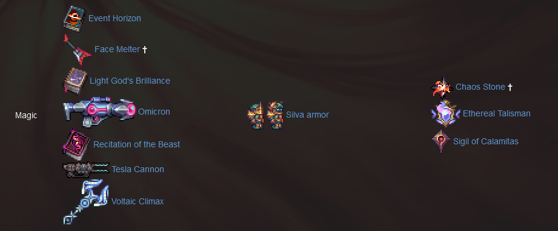

Intro
The Calamity Mod is a large content mod for Terraria which adds many hours of endgame content and dozens of enemies and bosses dispersed throughout the vanilla game's progression. The Calamity Mod also features several harder difficulty modes, five new biomes and new structures, a new class, more than fifty new songs, over fifty recipes for previously uncraftable vanilla items and other assorted changes to vanilla gameplay.
Forward
I completed the Terraria Calamity mod this weekend and I found it to be truly amazing. I have been playing Terraria for years and have too many hours in the PC and console version. I never got around to playing the Calamity mod however until recently. I am super glad that I did, as it would go on to be my best Terraria adventure yet. This mod was completely free for a game which I picked up for about 5 euro many years ago. If you have not played Terraria, I will always recommend it and now - with the Calamity mod using "tModLoader" (Available on Steam!).
Terraria has four base "Classes" - Melee, Ranger, Mage, and Summoner with Calamity adding one new class, the Rogue.
Growing up, mage was always my favourite class in Terraria. As such I decided that my first run using this mod would be dedicated to the way of the Mana Star.
My late game mage build alongside my pet Sugar GliderThis piece is a high-level overview of the major points during my run.
The Adventure
Let's rewind to the start.
I decided that my playthrough would be "Expert" mode. This mode greatly increases the difficulty of the game. I decided to do this because it allows for the chance to obtain exclusive content during the run. These are an award to the player for taking on an increased challenge!
Below is a list of only some of the exclusive "Expert" mode items. These would prove to be extremely useful throughout by journey. Note the Wall of Flesh drop: "Demon Heart" granting me an entirely new accessory slot.
https://terraria.fandom.com/wiki/Expert_ModeEarly Game
I used the Calamity Class Setup Guide during my run which was extremely useful to me. It gave me a good indication of where I should be at certain stages of my adventure. In the early game, our movement and damage are low. As such, this time is spent carefully preparing for the challenges ahead. Below is an image of some of the early game weapons (both vanilla and modded) that I was to try and aim for.
After taking down the early game bosses such as Skeletron, I prepared for the Wall of Flesh using the equipment below. At this point in the game, I had the ability to explore the first layers of a new scary biome which was added with the mod: The Abyss. This biome reminded me a bit about the game: Subnautica - where you explore the depths of the ocean which is home to unspeakable terrors!
Hardmode
Moving on, I fought through the early ages of Hardmode and began seeking the items in the image below. This loadout was recommended for taking down Plantera:
I had many new things available to me thanks to the Calamity mod, such as "Cryonic Ore", which spawned in the ice biome after defeating "Cryogen" (who was quite challenging!).
Below are just some of the bosses taken on at this point of the game:


 Left to right - Plantera, Calamitas Clone, Cryogen, and the
Aquatic Scourage.
Left to right - Plantera, Calamitas Clone, Cryogen, and the
Aquatic Scourage.
Upon defeating Plantera, a new ore spawned: "Perennial Ore". Furthermore, enemies in the Dungeon have grown stronger and they now drop Ectoplasm, which is a crafting material I need to further the power of my Mage build. I was now at a point in the game in which I should be fighting: Golem, Leviathan and Anahita, and Astrum Aureus
 [Leviathan and Anahita] "Leviathan Trophy.png "Although she
claims dominion over all the world's oceans, in truth she is a
recluse of the deep."
[Leviathan and Anahita] "Leviathan Trophy.png "Although she
claims dominion over all the world's oceans, in truth she is a
recluse of the deep."
 [Astrum Aureus]
[Astrum Aureus]
Post-Golem
After defeating Golem, another new Ore would spawn in my world. This was "Scoria" Ore. Moreover, "Plague" enemies have begun to spawn in the Jungle biome. At this point in the game, I could craft a material called "Life Alloy" which was used in many recipes.
Below is an image of the equipment, and armour which I pursued at this point in the game. I went for the "Spectre" armour, and I swapped between the DPS mask, and the Healing mask of this armour set for maximum efficiency.
Some of the bosses encountered at this point of the game present a great challenge!


 Left to right - Plaguebringer Goliath, Ravager, Empress of Light,
and Duke Fisheron
Left to right - Plaguebringer Goliath, Ravager, Empress of Light,
and Duke Fisheron
A useful item I had at this point of the game was the "Sigil of Calamitas". When equipped, it increases magic damage by 15%, reduces mana usage by 10%, increases maximum mana by 100, and increases the pickup range for Mana Stars.

Moon Lord
When defeating the Lunatic Cultists, I had had access to the "Ancient Manipulator". This would allow me to craft gear using Lunar Fragments that would allow me to take on "Astrum Deus"
 [Astrum Deus] Not to be confused with Astrum Aureus, that
similarly-themed cyborg boss.
[Astrum Deus] Not to be confused with Astrum Aureus, that
similarly-themed cyborg boss.
At this point in the game I was able to obtain the "Ethereal Core", an item that would boost my maximum mana by 50.
Moon Lord down!Post-Moon Lord
At this point it was time to begin preparing to take on a boss named "Providence". To do this I could prepare by using Luminite bars and Galactica Singularities. The Profaned Guardians could be fought at this point, which is required to get the Profaned Core to summon Providence.
Now that Moon Lord was defeated, I had access to Luminite ore which I used to craft the "Nebula Armour". This is the final magic set available in vanilla Terraria.
The Profaned Guardians:

 "...Rather simple constructs, extensions of the Profaned Goddess'
power."
"...Rather simple constructs, extensions of the Profaned Goddess'
power."
Providence, the Profaned Goddess
 "There was silence, until Providence spoke once more. 'Let us go
forth, and light the world anew.' And it was so."
"There was silence, until Providence spoke once more. 'Let us go
forth, and light the world anew.' And it was so."
Polterghast

At this point in the journey Divine Geodes, Uelibloom Ore, and Bloodstone are available. Using these items, I could craft "Prismatic Armour", an armour set which the mod added that was more powerful than the previously mentioned Nebula Armour!
The equipment shown in this image displays my loadout at this point in the game. I could not get the Thunderstorm which is a drop from the Storm Weaver boss. It is a 10% drop from that boss however, luck was against my side! I managed the prepare the other items however which was sufficient for me to progress.
Before fighting Polterghast I had to take on "The Rune of Kos bosses". Each of these bosses drop a key crafting material needed to craft a "Cosmic Worm", which is used to summon: "The Devourer of Gods".
"The item used to summon the bosses, the Rune of Kos, can be crafted before defeating Providence, the Profaned Goddess, but it is also dropped by her when defeated for the first time. Despite each boss being summoned with the Rune of Kos, the player must be in the correct biome to summon a certain boss. These biomes are Space for the Storm Weaver, the Dungeon for the Ceaseless Void, and The Underworld for Signus, Envoy of the Devourer."The Devourer of Gods
The fight against The Devourer of Gods is lengthy and difficult with several phases and numerous varying attacks behaviors.

You are no god... but I shall feast upon your essence regardless!
Here is what equipment looked like at this part of the run:
Defeating him grants access to Cosmilite Bars, a crafting material necessary for crafting a variety of late-game equipment. The Pumpkin Moon, Frost Moon, and Solar Eclipse events will significantly increase in difficulty as well, allowing enemies to drop Nightmare Fuel, Endothermic Energy, and Darksun Fragments respectively, which are also essential late-game crafting materials.
Yharon
Yharon, Dragon of Rebirth (also known as Yharon, Resplendent Phoenix when he is at 55% health) is a major boss, intended to be fought after The Devourer of Gods. It is highly recommended to be well-equipped and prepared before summoning him as he can be incredibly challenging.
The Yharon fight was an amazing one, with even better music. It really felt like I was challenging a super boss.
 "The return of the Age of Dragons, dashed. Just like that, it is
but ashes in the wind…"
"The return of the Age of Dragons, dashed. Just like that, it is
but ashes in the wind…"
Here is what equipment looked like at this part of the run:
Defeating Yharon grants access to Yharon Soul Fragments and causes Auric Ore to spawn in the world. This would grant be access to one of the highest tiers of equipment in the journey.
 Auric Bar
Auric Bar
Yharon has a 10% chance of dropping: "Yharim’s Crystal". It is an extremely powerful magic weapon that is similar to the Last Prism. It fires six red and orange beams that converge into one yellow beam as it charges. It inflicts the Dragonfire debuff to enemies.
 Yharim’s Crystal
Yharim’s Crystal
Because my playthrough was for the Mage class it was only right for me to pursue getting this item to drop. I got it on perhaps my third or fourth battle against Yharon.